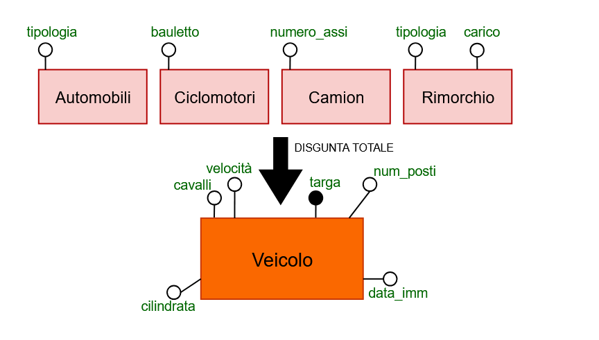
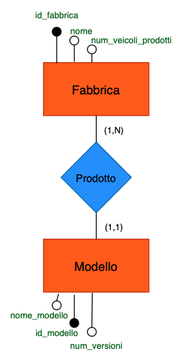

Si progetti uno schema entità/relazioni per la gestione di un
registro automobilistico, facente parte del sistema informativo di un
ufficio di motorizzazione, contenente le seguenti informazioni: - di
ciascun veicolo interessa registrare la targa, la cilindrata, i cavalli
fiscali, la velocità, il numero di posti e la data di immatricolazione;
- i veicoli sono classificati in categorie (automobili, ciclomotori,
camion, rimorchi, ecc.); - ciascun veicolo appartiene ad uno specifico
modello; - tra i dati relativi ai veicoli, vi è la codifica del tipo di
combustibile utilizzato; - di ciascun modello di veicolo è registrata la
fabbrica di produzione e il numero delle versioni prodotte; - ciascun
veicolo può avere uno o più proprietari, che si succedono nel corso
della “vita” del veicolo; di ciascun proprietario interessa registrare
cognome, nome e indirizzo di residenza.
Lo schema entità/relazioni dovrà essere completato con attributi
“ragionevoli” per ciascuna entità, identificando le possibili chiavi e
le relazioni necessarie per la gestione del sistema in esame. A partire
dallo schema entità/relazioni, si costruisca il corrispondente schema
relazionale.
| Termine | Descrione | Sinonimi | Link |
|---|---|---|---|
| Veicolo | informazioni generali su un veicolo | Modello, Proprietario, Combustibile | |
| Modello | Tipo di modello di veicolo | Veicolo, Fabbrica | |
| Fabbrica | Azienda che procude un modello di veicolo | Modello | |
| Proprietario | Chi ha posseduto e possiede un veicolo | Veicolo | |
| Combustibile | Quale combustibile utilizza un veicolo | Veicolo |
Frasi generiche : > Si progetti uno schema entità/relazioni per la gestione di un registro automobilistico, facente parte del sistema informativo di un ufficio di motorizzazione, contenente le seguenti informazioni.
Frasi relative al veicolo: > Di ciascun veicolo interessa registrare la targa, la cilindrata, i cavalli fiscali, la velocità, il numero di posti e la data di immatricolazione.
Frasi relative al modello: > Ciascun veicolo appartiene ad uno specifico modello.
Frasi relative alla fabbrica: > Di ciascun modello di veicolo è registrata la fabbrica di produzione e il numero delle versioni prodotte.
Frasi relative al proprietario: > Ciascun veicolo può avere uno o piú proprietari, che si succedono nel corso della “vita” del veicolo; di ciascun proprietario interessa registrare cognome, nome e indirizzo di residenza.
Frasi relative al combustibile: > Di ciascun veicolo interessa registrare il tipo di combustibile utilizzato.
La strategia che abbiamo utilizzato per costruire il modello ER è la strategia Mista (Mixed Strategy). Abbiamo optato per questa tecnica perché ci sembrava comodo avere uno scheletro iniziale che ci permettesse di avere una visione di base dello schema. Inizialmente abbiamo usato la strategia bottom-up per assemblare insieme tutte le entità. In seguito, abbiamo usato la tecnica top-down, in questo modo, tramite perfezionamenti, abbiamo sviluppato lo schema finale.
La prima entità che abbiamo esaminato è Veicolo. Gli attributi che abbiamo aggiunto a questa entità sono targa, cilindrata, cavalli fiscali, velocità, numero di posti e data immatricolazione. Questa entità viene identificata univocamente dall’attributo targa.

In seguito per quanto riguarda Veicolo abbiamo deciso di fare una generalizzazione Totale e Disgunta. In questo modo un veicolo puo` essere distinto tra Automobili, Ciclomotori, Camion e Rimorchio. La generalizzazione e’ disgunta perche’ veicolo puo’ ricoprire solo una delle quattro categorie.
La generalizzazione è stata gestita nel modo sotto riportato aggiungendo degli attributi per ogni entità figlia.
Veicolo (Entità genitore): *
Automobile (Entità figlia)
* tipologia
* Camion (Entità figlia)
* numero assi
* Ciclomotore (Entità figlia)
* bauletto
* Rimorchio (Entità figlia)
* tipologia
* carico

L’entità successiva che abbiamo analizzato è Modello. Gli attributi che abbiamo aggiunto a questa entità sono idModello, nomeModello e numeroVersioni. Questa entità viene identificata univocamente dall’attributo id_modello.

La prossima entità che abbiamo visto è Fabbrica. A livello conettuale abbiamo gestito fabbrica come il marchio di un modello di veicolo, per esempio: Audi, BMW, Fiat, etc. Gli attributi che abbiamo aggiunto a questa entità sono idFabbrica, nome e numeroVeicoloProdotti. Questa entità viene identificata univocamente dall’attributo idFabbrica. Noi abbiamo scelto “numeroVeicoliProdotti” come l’attributo ridondante che in seguito verifecheremo se si può tenere o meno.
 S
S
L’entità successiva è Combustibile. Gli attributi che abbiamo aggiunto a questa entità sono codiceCombustibile e tipoCombustibile. Questa entità viene identificata univocamente dall’attributo codiceCombustibile e descritta dall’attributo TipoCombustibile. Tra codiciCombustibile abbiamo messo un caso particolare TR che sarebbe il codiceCombustibile per i rimorchi che vengono trainati. In questo modo risolviamo il problema dei rimorchi che usano combustibile.

Infine l’ultima entità è Proprietario. Gli attributi che abbiamo aggiunto a questa entità sono idProprietario e indirizzo. Questa entità viene identificata univocamente dall’attributo idProprietario. Per comodità abbiamo gestito indirizzo come una unica stringa ma si poteva pensare di utilizzare un attributo composto che rappresentasse la via, il numero civico e la città.

Come aggiunta abbiamo deciso di aggiungere una generalizzazione su proprietario che ci permetta di identificare se è Privato, quindi una persona fisica o se appartiene ad una Società, quindi un veicolo aziendale. La generalizzazione e’ disgunta perche’ proprietario puo’ ricoprire solo una delle due categorie.
In queste generalizzazione abbiamo pensato di ricavare gli attributi
di Privato tramite Proprietario e aggiungere gli attributi di Societa
partita iva e nome. Proprietario (Entità genitore): *
Privato (Entità figlia)
* CF: not NULL
* nome not NULL * cognome not NULL * data di nascita
* Societa (Entità figlia)
* partita iva

Tra Modello e Veicolo è presente una relazione uno a molti “Appartiene” → Tra Veicolo (1:1) e Modello (1:N)

Tra Modello e Fabbrica è presente una relazione uno a molti “Prodotto” → Tra Fabbrica (1:1) e Modello (1:N)

Tra Veicolo e Combustibile è presente una relazione uno a molti “Utilizza” → Tra Veicolo (1:1) e Combustibile (1:N)

Tra Veicolo e Proprietario sono
presenti due relazioni: 1) Uno a molti “Proprietario
Corrente” → Tra Veicolo (1:1) e Proprietario (0:N) - Un veicolo
appartiene solo un proprietario corrente.
- Un proprietario può non avere un veicolo al momento oppure avere più
di uno - Data è l’attributo che identifica la data dell’acquisto del
veicolo al proprietario corrente 1) Molti a molti “Proprietario
Passato” → Tra Veicolo (0:N) e Proprietario (0:N) - Un veicolo
può avere o no più proprietari passati - Un proprietario può avere o no
più veicoli nel passato - Data acquisto e data vendita sono attributi
che identificano la data dell’acquisto e vendita del veicolo al
proprietario corrente - Se un proprietario compra e vende la stessa
macchina due volte allora si registrano solo le date dell’ultima
occorrenza.
“Proprietario Passato” ci risolve la questione della “vita” di un veicolo


Di seguito sono elencate le regole di gestione usate nello schema ER. 1) num_veicoli_prodotti: numero di veicoli prodotti dalla fabbrica
Altre idee di regole di gestione che potrebbero essere utilizzate: 1) L’età di un veicolo è la differenza tra la data odierna e la data di immatricolazione. 2) Il numero di anni di proprietà di un veicolo è la differenza tra la data di acquisto e la data di vendita.
Questa tabella ci fornisce una visione chiara della dimensione del sistema che stiamo progettando. Notiamo che:
Caso studio: Numero di veicoli prodotti per Fabbrica
Consideriamo l’attributo “numeroVeicoliProdotti” nell’entità Fabbrica. Questo è un dato derivabile ma potrebbe essere utile mantenerlo come ridondanza per migliorare le prestazioni.

Per eseguire il calcolo delle operazione in presenza di ridondanze si fa il calcolo di ogni micro processo:
| Concetto | Costrutto | Accessi | Tipo |
|---|---|---|---|
| Veicolo | E | 1 | S |
| Appartiene | R | 1 | S |
| Modello | E | 0 | |
| Prodotto | R | 1 | L |
| Fabbrica | E | 1 | L |
| Fabbrica | E | 1 | S |
(15 * 3) * 2 + (15 * 2) = 120
Totale: 3 scritture + 2 letture = 8 accessi/operazione
Costo giornaliero: 8 * 15 = 120 accessi
| Concetto | Costrutto | Accessi | Tipo |
|---|---|---|---|
| Fabbrica | E | 1 | L |
2 * 1 = 2
Costo giornaliero: 1 * 2 = 2 accessi
Costo totale giornaliero con ridondanza: 122 accessi

| Concetto | Costrutto | Accessi | Tipo |
|---|---|---|---|
| Veicolo | E | 1 | S |
| Appartiene | R | 1 | S |
| Modello | E | 0 | |
| Prodotto | R | 0 | |
| Fabbrica | E | 0 |
(15 * 2) * 2 = 60
Totale: 2 scritture = 4 accessi/operazione
Costo giornaliero: 4 * 15 = 60 accessi
| Concetto | Costrutto | Accessi | Tipo |
|---|---|---|---|
| Fabbrica | E | 1 | L |
| Prodotto | E | 20 | L |
| Appartiene | E | 9000 (20*450) | L |
(1 + 20 + 9000) * 2 = 18042
Costo per operazione: 1 + 20 + 9000 = 9021 letture
Costo giornaliero: 9021 * 2 = 18042 accessi
Costo totale giornaliero senza ridondanza: 60 + 18042 = 18102 accessi
Presenza di ridondanza ⟹ 120 + 2 = 122
Assenza di ridondanza ⟹ 60 + 18042 = 18102
Mantenere la ridondanza comporta un costo giornaliero di 122 accessi,
mentre eliminarla porta a 18102 accessi.
La differenza è significativa: mantenere la ridondanza riduce il carico
di lavoro di circa il 99.3%. Pertanto, è altamente consigliabile
mantenere l’attributo ridondante “numeroVeicoliProdotti” nell’entità
Fabbrica.
In questa fase del progetto sono state gestite le generalizzazioni presenti eliminando le gerarchie. In particolare sono state trasformate le seguenti parti:
Veicolo

Abbiamo optato per una strategia di accorpamento nel genitore. Questa scelta è motivata dal fatto che la maggior parte delle operazioni coinvolgerà attributi comuni a tutti i tipi di veicolo.
Proprietario

Anche per proprietario abbiamo scelto la stessa strategia.

Per quanto riguarda l’entità Proprietario, abbiamo optato per mantenere l’attributo ‘indirizzo’ come un campo di testo unico, invece di partizionarlo verticalmente in componenti separate (come via, numero civico, CAP, città). Questa decisione è stata presa considerando che l’indirizzo viene generalmente utilizzato come un’unica unità informativa nelle operazioni più frequenti, e la sua scomposizione non offrirebbe vantaggi significativi in termini di prestazioni o funzionalità per il nostro specifico caso d’uso.
| Entità | Chiavi |
|---|---|
| Veicolo | Targa |
| Combustibile | codiceCombustibile |
| Proprietario | idProprietario |
| Modello | idModello |
| Fabbrica | idFabbrica |
La scelta degli identificatori è stata fatta considerando l’unicità, l’immutabilità e la semplicità di gestione.
fabbrica {id_fabbrica (PK), nome, numero_veicolo_prodotti}
modello {id_modello (PK), nome_modello, numero_versioni, fabbrica_di_produzione (FK → fabbrica._id_fabbrica_)}
combustibile {codice_combustibile (PK), tipo_combustibile}
proprietario {id_proprietario (PK), indirizzo}
privato {id_proprietario (PK, FK → proprietario._id_proprietario_), cf, nome, cognome, data_nascita}
societa {id_proprietario (PK, FK → proprietario._id_proprietario_), partita_iva}
veicolo {targa (PK), cavalli, velocita, numero_posti, data_immatricolazione, cilindrata, data, modello (FK → modello), codice_combustibile (FK → combustibile._codice_combustibile_), proprietario (FK → proprietario._id_proprietario_)}
proprietari_passati {targa (PK, FK → veicolo._targa_), id_proprietario (PK, FK → proprietario._id_proprietario_), data_vendita, data_acquisto}
automobile {targa (PK, FK → veicolo._targa_), tipologia}
ciclomotore {targa (PK, FK → veicolo._targa_), bauletto}
camion {targa (PK, FK → veicolo._targa_), numero_assi}
rimorchio {targa (PK, FK → veicolo._targa_), tipologia, carico}
IMPORTANTE: Le chiavi primarie (PK) e le chiavi esterne (FK) non possono essere NULL
Privato.CF: NOT NULL
Totalità e disgiunzione - Ogni proprietario deve essere solo Privato o Società - Ogni veicolo deve comparire in esattamente una tabella figlia: (Automobile, Camion, Ciclomotore, Rimorchio)
In seguito abbiamo creato la base di dati. Sotto mostriamo tutto il codice SQL.
CREATE DATABASE "registro automobilistico"
WITH
OWNER = postgres
ENCODING = 'UTF8'
LOCALE_PROVIDER = 'libc'
CONNECTION LIMIT = -1
IS_TEMPLATE = False;CREATE TABLE fabbrica (
id_fabbrica INT PRIMARY KEY,
nome VARCHAR(50) NOT NULL,
numero_veicoli_prodotti INT DEFAULT 0
);
CREATE TABLE modello (
id_modello INT PRIMARY KEY,
nome_modello VARCHAR(50),
numero_versioni INT NOT NULL CHECK (numero_versioni > 0),
fabbrica_di_produzione INT NOT NULL,
FOREIGN KEY (fabbrica_di_produzione) REFERENCES fabbrica(id_fabbrica)
);
CREATE TABLE combustibile (
codice_combustibile VARCHAR(15) PRIMARY KEY,
tipo_combustibile VARCHAR(20)
);
CREATE TABLE proprietario (
id_proprietario INT PRIMARY KEY,
indirizzo VARCHAR(255) NOT NULL
);
CREATE TABLE privato (
id_proprietario INT PRIMARY KEY,
cf VARCHAR(16) NOT NULL UNIQUE,
nome VARCHAR(50) NOT NULL,
cognome VARCHAR(50) NOT NULL,
data_nascita DATE,
FOREIGN KEY (id_proprietario) REFERENCES proprietario(id_proprietario)
);
CREATE TABLE societa (
id_proprietario INT PRIMARY KEY,
partita_iva VARCHAR(16) NOT NULL UNIQUE,
FOREIGN KEY (id_proprietario) REFERENCES proprietario(id_proprietario)
);
CREATE TABLE veicolo (
targa VARCHAR(10) PRIMARY KEY,
cilindrata INT NOT NULL,
cavalli INT NOT NULL,
velocita INT NOT NULL,
numero_posti INT NOT NULL,
data_immatricolazione DATE NOT NULL,
data DATE NOT NULL,
modello INT NOT NULL,
codice_combustibile VARCHAR(15) NOT NULL,
proprietario INT NOT NULL,
CHECK (
(cilindrata >= 0) AND
(cavalli >= 0) AND
(velocita >= 0) AND
(numero_posti >= 0)
),
FOREIGN KEY (modello) REFERENCES modello(id_modello),
FOREIGN KEY (codice_combustibile) REFERENCES combustibile(codice_combustibile),
FOREIGN KEY (proprietario) REFERENCES proprietario(id_proprietario)
);
CREATE TABLE automobile (
targa VARCHAR(10) PRIMARY KEY,
tipologia VARCHAR(20),
FOREIGN KEY (targa) REFERENCES veicolo(targa)
);
CREATE TABLE ciclomotore (
targa VARCHAR(10) PRIMARY KEY,
bauletto BOOLEAN,
FOREIGN KEY (targa) REFERENCES veicolo(targa)
);
CREATE TABLE camion (
targa VARCHAR(10) PRIMARY KEY,
numero_assi INT,
FOREIGN KEY (targa) REFERENCES veicolo(targa)
);
CREATE TABLE rimorchio (
targa VARCHAR(10) PRIMARY KEY,
tipologia VARCHAR(20),
carico INT,
FOREIGN KEY (targa) REFERENCES veicolo(targa)
);
CREATE TABLE proprietari_passati (
targa VARCHAR(10),
id_proprietario INT,
data_acquisto DATE NOT NULL,
data_vendita DATE NOT NULL,
PRIMARY KEY (targa, id_proprietario),
CHECK (data_vendita > data_acquisto),
FOREIGN KEY (targa) REFERENCES veicolo(targa),
FOREIGN KEY (id_proprietario) REFERENCES proprietario(id_proprietario)
);-- Trigger --
--controllo nr_veicoli_prodotti--
CREATE OR REPLACE FUNCTION aggiorna_conteggio_veicoli()
RETURNS TRIGGER AS $$
BEGIN
UPDATE fabbrica
SET numero_veicoli_prodotti = numero_veicoli_prodotti + 1
WHERE id_fabbrica = (
SELECT fabbrica_di_produzione
FROM modello
WHERE id_modello = NEW.modello
);
RETURN NEW;
END;
$$ LANGUAGE plpgsql;
CREATE TRIGGER trigger_conteggio_veicoli
AFTER INSERT ON veicolo
FOR EACH ROW EXECUTE FUNCTION aggiorna_conteggio_veicoli();
-------------------------------------------------------------------------------
-- Trigger per verificare mutua esclusione PRIVATO
CREATE OR REPLACE FUNCTION check_privato_mutua_esclusione()
RETURNS TRIGGER AS $$
BEGIN
-- Verifica se esiste già in societa
IF EXISTS (SELECT 1 FROM societa WHERE id_proprietario = NEW.id_proprietario) THEN
RAISE EXCEPTION 'Mutua esclusione violata: ID % è già registrato come società', NEW.id_proprietario;
END IF;
RETURN NEW;
END;
$$ LANGUAGE plpgsql;
CREATE TRIGGER trigger_check_privato
BEFORE INSERT OR UPDATE ON privato
FOR EACH ROW EXECUTE FUNCTION check_privato_mutua_esclusione();
-- Trigger per verificare mutua esclusione SOCIETA
CREATE OR REPLACE FUNCTION check_societa_mutua_esclusione()
RETURNS TRIGGER AS $$
BEGIN
-- Verifica se esiste già in privato
IF EXISTS (SELECT 1 FROM privato WHERE id_proprietario = NEW.id_proprietario) THEN
RAISE EXCEPTION 'Mutua esclusione violata: ID % è già registrato come privato', NEW.id_proprietario;
END IF;
RETURN NEW;
END;
$$ LANGUAGE plpgsql;
CREATE TRIGGER trigger_check_societa
BEFORE INSERT OR UPDATE ON societa
FOR EACH ROW EXECUTE FUNCTION check_societa_mutua_esclusione();SELECT v.*
FROM veicolo v
LEFT JOIN proprietari_passati pp ON v.targa = pp.targa
WHERE pp.targa IS NULL
ORDER BY v.cavalli DESC
LIMIT 1;Output: 
SELECT s.partita_iva, COUNT(pp.targa) AS num_veicoli
FROM societa s
JOIN proprietari_passati pp ON s.id_proprietario = pp.id_proprietario
GROUP BY s.partita_iva
HAVING COUNT(pp.targa) = 2;Output: 
SELECT v.*
FROM veicolo v
JOIN modello m ON v.modello = m.id_modello
WHERE m.fabbrica_di_produzione IN (
SELECT fabbrica_di_produzione
FROM modello
GROUP BY fabbrica_di_produzione
HAVING COUNT(*) = 3
);SELECT V.targa
FROM veicolo AS V
JOIN modello AS M ON V.modello = M.id_modello
JOIN fabbrica AS F ON M.fabbrica_di_produzione = F.id_fabbrica
WHERE F.id_fabbrica IN (
SELECT F2.id_fabbrica
FROM fabbrica F2
WHERE EXISTS (
SELECT *
FROM modello M2
WHERE M2.fabbrica_di_produzione = F2.id_fabbrica
AND EXISTS (
SELECT *
FROM modello M3
WHERE M3.fabbrica_di_produzione = F2.id_fabbrica
AND M3.id_modello <> M2.id_modello
AND EXISTS (
SELECT *
FROM modello M4
WHERE M4.fabbrica_di_produzione = F2.id_fabbrica
AND M4.id_modello <> M2.id_modello
AND M4.id_modello <> M3.id_modello
AND NOT EXISTS (
SELECT *
FROM modello M5
WHERE M5.fabbrica_di_produzione = F2.id_fabbrica
AND M5.id_modello <> M2.id_modello
AND M5.id_modello <> M3.id_modello
AND M5.id_modello <> M4.id_modello
)
)
)
)
);Output: 
SELECT COUNT(*) AS numero_veicoli
FROM veicolo v
JOIN proprietari_passati pp ON v.targa = pp.targa
WHERE v.proprietario = pp.id_proprietario;Output: 
SELECT f.nome, COUNT(*) AS num_elettrici
FROM veicolo v
JOIN modello m ON v.modello = m.id_modello
JOIN fabbrica f ON m.fabbrica_di_produzione = f.id_fabbrica
WHERE v.codice_combustibile = 'ELET'
GROUP BY f.nome
ORDER BY num_elettrici DESC
LIMIT 1;oppure con le viste
CREATE VIEW veicoli_elettrici_per_fabbrica AS (
SELECT m.fabbrica_di_produzione, COUNT(v.targa) AS numero_veicoli_elettrici
FROM veicolo v
JOIN modello m ON v.modello = m.id_modello
WHERE v.codice_combustibile = 'ELET'
GROUP BY m.fabbrica_di_produzione
);
SELECT fabbrica.nome, numero_veicoli_elettrici
FROM veicoli_elettrici_per_fabbrica, fabbrica
WHERE fabbrica.id_fabbrica=fabbrica_di_produzione AND numero_veicoli_elettrici = (
SELECT MAX(numero_veicoli_elettrici)
FROM veicoli_elettrici_per_fabbrica
);Output: 
SELECT --Recupero del proprietario corrente, deve anche trovare se e' un privato o una societa'
v.targa,
p.id_proprietario,
CASE
WHEN pr.id_proprietario IS NOT NULL
THEN CONCAT('Privato CF ', pr.cf)
WHEN s.id_proprietario IS NOT NULL
THEN CONCAT('Società P.IVA ', s.partita_iva)
END AS proprietario,
v.data AS data_acquisto,
NULL AS data_vendita,
'Ultimo proprietario' AS stato
FROM veicolo v
JOIN proprietario p ON v.proprietario = p.id_proprietario
LEFT JOIN privato pr ON p.id_proprietario = pr.id_proprietario
LEFT JOIN societa s ON p.id_proprietario = s.id_proprietario
WHERE v.targa = 'GC908BT'
UNION ALL
SELECT --Recupero dei proprietario correnti, deve anche trovare se sono dei privati o delle societa'
pp.targa,
pp.id_proprietario,
CASE
WHEN pr.id_proprietario IS NOT NULL
THEN CONCAT('Privato CF ', pr.cf)
WHEN s.id_proprietario IS NOT NULL
THEN CONCAT('Società IVA ', s.partita_iva)
END AS proprietario,
pp.data_acquisto,
pp.data_vendita,
'Ex proprietario' AS stato
FROM proprietari_passati pp
JOIN proprietario p ON pp.id_proprietario = p.id_proprietario
LEFT JOIN privato pr ON p.id_proprietario = pr.id_proprietario
LEFT JOIN societa s ON p.id_proprietario = s.id_proprietario
WHERE pp.targa = 'GC908BT'
ORDER BY data_acquisto DESC;Output: 
Inserimento e aggiornamento: - passagio di proprieta
WITH vecchio_proprietario AS (
SELECT targa, proprietario, data
FROM veicolo
WHERE targa = 'AB123CD'
),
registrazione_storico AS (
INSERT INTO proprietari_passati (targa, id_proprietario, data_acquisto, data_vendita)
SELECT targa, proprietario, data, CURRENT_DATE
FROM vecchio_proprietario
)
UPDATE veicolo
SET
proprietario = 78,
data = CURRENT_DATE
WHERE targa = 'AB123CD';Cancellazione: - eliminare tutti i proprietari (privati e società) senza veicoli attuali o storici
DELETE FROM societa
WHERE id_proprietario IN (
SELECT p.id_proprietario
FROM proprietario p
LEFT JOIN veicolo v ON p.id_proprietario = v.proprietario
LEFT JOIN proprietari_passati pp ON p.id_proprietario = pp.id_proprietario
WHERE v.targa IS NULL AND pp.targa IS NULL
);
DELETE FROM privato
WHERE id_proprietario IN (
SELECT p.id_proprietario
FROM proprietario p
LEFT JOIN veicolo v ON p.id_proprietario = v.proprietario
LEFT JOIN proprietari_passati pp ON p.id_proprietario = pp.id_proprietario
WHERE v.targa IS NULL AND pp.targa IS NULL
);
DELETE FROM proprietario
WHERE id_proprietario NOT IN (
SELECT id_proprietario FROM veicolo
UNION
SELECT id_proprietario FROM proprietari_passati
);
COMMIT;result <- dbGetQuery(pg_connection,
"SELECT f.nome AS fabbriche,count(m.id_modello) as numeroModelli
FROM fabbrica as f, modello as m
WHERE f.id_fabbrica = m.fabbrica_di_produzione
GROUP BY f.nome")
result$numeromodelli <- as.integer(result$numeromodelli)
# Creazione del grafico a barre con ggplot2
ggplot(data = result, aes(x = fabbriche, y = numeromodelli, fill = numeromodelli)) +
geom_bar(stat = "identity", color = "black") +
xlab("Fabbriche") +
ylab("Numero di Modelli") +
ggtitle("Numero di Modelli per Fabbrica") +
theme(axis.text.x = element_text(angle = 45, hjust = 1)) +
scale_fill_gradient(low = "lightblue", high = "darkblue")
result <- dbGetQuery(pg_connection,
"SELECT
CASE
WHEN targa IN (SELECT targa FROM automobile) THEN 'automobile'
WHEN targa IN (SELECT targa FROM camion) THEN 'camion'
WHEN targa IN (SELECT targa FROM ciclomotore) THEN 'ciclomotore'
WHEN targa IN (SELECT targa FROM rimorchio) THEN 'rimorchio'
ELSE 'altro'
END AS categoria,
COUNT(*) AS numero_veicoli
FROM veicolo
GROUP BY categoria")
ggplot(result, aes(x = "", y = numero_veicoli, fill = categoria)) +
geom_bar(stat = "identity", width = 1) +
coord_polar("y", start = 0) +
labs(x = NULL, y = NULL, fill = "Categoria", title = "Distribuzione dei Veicoli per Categoria") +
theme_void() +
theme(plot.title = element_text(hjust = 0.5))
result <- dbGetQuery(pg_connection,
"select cavalli, count(targa) from veicolo group by cavalli")
ggplot(result, aes(x = cavalli, y = count)) +
geom_bar(stat = "identity", fill = "aquamarine4") +
labs(title = "Distribuzione dei veicoli per cavalli",
x = "Cavalli",
y = "Numero di targhe") +
theme_minimal()
In conclusione, il progetto ha permesso di sviluppare un sistema di gestione per un registro automobilistico, basato su una progettazione accurata e ottimizzata per garantire efficienza e integrità dei dati. Attraverso l’analisi dei modelli concettuali, logici e fisici, sono state implementate soluzioni robuste per gestire le complessità del dominio, dimostrando l’efficacia di un approccio metodico nella progettazione di basi di dati.